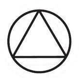
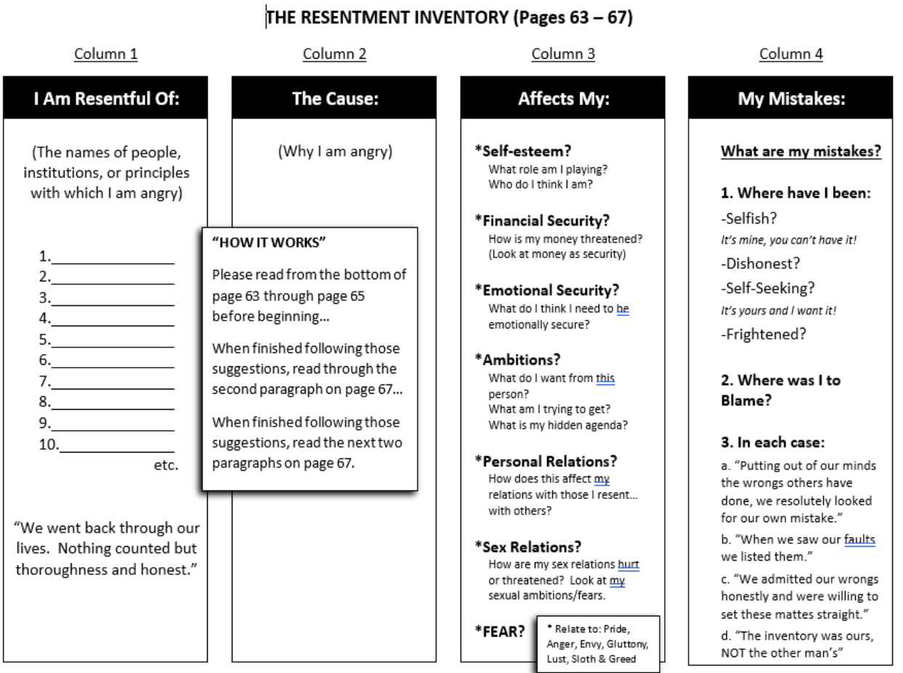
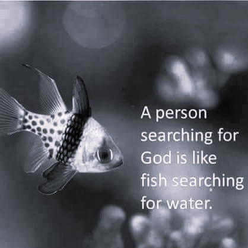

Abandon yourself to God as you understand God. Admit your faults to Him and to your fellows. Clear away the wreckage of your past. Give freely of what you find and join us. We shall be with you in the Fellowship of the Spirit, and you will surely meet some of us as you trudge the Road of Happy Destiny.
May God bless you and keep you—until then.
Alcoholics Anonymous, pg. 164
This 12 step guide is meant to be used only in a workshop setting or where the Big Book of Alcoholics Anonymous will be studied in its entirety; meaning the book will be read page for page and line for line. This is necessary to not dilute the power of the program, or merge our program with hearsay; so the hopeless man or woman who still suffers can recover.
“All problems in AA can be solved with good sponsorship.” - Don P.
Citations: Alcoholics Anonymous Book

Read Dr. Opinion through pg. 43
Our Common welfare should come first; personal recovery depends upon A.A. unity.
Long Form:
Each member of Alcoholics Anonymous is but a small part of a great
whole. A.A. must continue to live or most of us will surely die. Hence
our common welfare comes first. But individual welfare follows close
afterward.
Read We Agnostics pg. 44-57
| Term | Definition |
|---|---|
| A. God | |
| B. Him | |
| C. Supreme Being | |
| D. Power | |
| E. Creative Intelligence | |
| F. Spirit of the Universe | |
| G. Realm of Spirit | |
| H. All Powerful | |
| I. Guiding | |
| J. Creation | |
| K. Bridge of Reason | |
| L. New Land | |
| M. Reason | |
| N. God of Reason | |
| O. Great Reality | |
| P. Broad Highway | |
| Q. Presence of God | |
| R. Creator |
For our group purpose, there is but one ultimate authority-a loving God as he may express Himself in our group conscience. Our leaders are but trusted servants; they do not govern.
Long Form:
For our group purpose there is but one ultimate authority—a loving
God as He may express Himself in our group conscience.
Read pg. 58 - 63
Above everything, we alcoholics must be rid of this selfishness. We must, or it kills us! God makes that possible. And there often seems no way of entirely getting rid of self without His aid.
Alcoholics Anonymous pg. 62
God, I offer myself to Thee - To build with me and to do with me as Thou wilt. Relieve me of the bondage of self, that I may better do Thy will. Take away my difficulties, that victory over them may bear witness to those I would help of Thy Power, Thy Love, and Thy Way of life. May I do Thy will always!
Alcoholics Anonymous pg. 63
The only requirement for membership is a desire to stop drinking.
Long Form:
Our membership ought to include all who suffer from alcoholism.
Hence we may refuse none who wish to recover. Nor ought A.A. membership
ever depend upon money or conformity. Any two or three alcoholics
gathered together for sobriety may call themselves an A.A. group,
provided that, as a group, they have no other affiliation.

| FEAR | Why do I have them? | How has it affected me? | How did I set the ball rolling? | How did self-reliance fail? |
| 1 | ||||
| 2 |
Perhaps there is a better way - we think so. For we are now on a different basis; the basis of trusting and relying upon God. We trust infinite God rather than our finite selves. We are in the world to play the role He assigns. Just to the extent that we do as we think He would have us, and humbly rely on Him, does He enable us to match calamity with serenity.
We never apologize to anyone for depending upon our Creator. We can laugh at those who think spirituality the way of weakness. Paradoxically, it is the way of strength. The verdict of the ages is that faith means courage. All men of faith have courage. They trust their God. We never apologize for God. Instead we let Him demonstrate, through us, what He can do. We ask Him to remove our fear and direct our attention to what He would have us be. At once, we commence to outgrow fear.
Alcoholics Anonymous, pg. 68
In this way we tried to shape a sane and sound ideal for our future sex life.
In meditation we ask God what we should do about each specific matter. The right answer will come, if we want it.
Alcoholics Anonymous, pg. 69
Suppose we fall short of the chosen ideal and stumble? Does this mean we are going to get drunk? Some people tell us so. But this is only a half-truth. It depends on us and on our motives. If we are sorry for what we have done, and have the honest desire to let God take us to better things, we believe we will be forgiven and will have learned our lesson. If we are not sorry, and our conduct continues to harm others, we are quite sure to drink. We are not theorizing. These are facts out of our experience.
To sum up about sex: We earnestly pray for the right ideal, for guidance in each questionable situation, for sanity, and for the strength to do the right thing. If sex is very troublesome, we throw ourselves the harder into helping others. We think of their needs and work for them. This takes us out of ourselves. It quiets the imperious urge, when to yield would mean heartache
Alcoholics Anonymous, pg. 70
Each group should be autonomous except in matters affecting other groups or A.A. as a whole.
Long Form:
With respect to its own affairs, each A.A. group should be
responsible to no other authority than its own conscience. But when its
plans concern the welfare of neighboring groups also, those groups ought
to be consulted. And no group, regional committee, or individual should
ever take any action that might greatly affect A.A. as a whole without
conferring with the trustees of the General Service Board. On such
issues our common welfare is paramount.
Read pg. 72-75
Each group has but one primary purpose-to carry its message to the alcoholic who still suffers.
Long Form:
Each Alcoholics Anonymous group ought to be a spiritual entity
having but one primary purpose—that of carrying its message to the
alcoholic who still suffers.
Read pg. 76
An A.A. group ought never endorse, finance, or lend the A.A. name to any related facility or outside enterprise, lest problems of money, property, and prestige divert us from our primary purpose.
Long Form:
Problems of money, property, and authority may easily divert us from
our primary spiritual aim. We think, therefore, that any considerable
property of genuine use to A.A. should be separately incorporated and
managed, thus dividing the material from the spiritual. An A.A. group,
as such, should never go into business. Secondary aids to A.A., such as
clubs or hospitals which require much property or administration, ought
to be incorporated and so set apart that, if necessary, they can be
freely discarded by the groups. Hence such facilities ought not to use
the A.A. name. Their management should be the sole responsibility of
those people who financially support them. For clubs, A.A. managers are
usually preferred. But hospitals, as well as other places of
recuperation, ought to be well outside A.A.—and medically supervised.
While an A.A. group may cooperate with anyone, such cooperation ought
never go so far as affiliation or endorsement, actual or implied. An
A.A. group can bind itself to no one.
Read pg. 76
My Creator, I am now willing that you should have all of me, good and bad. I pray that you now remove from me every single defect of character which stands in the way of my usefulness to you and my fellows. Grant me strength, as I go out from here, to do your bidding. Amen.
Alcoholics Anonymous, pg. 76
Every A.A. group ought to be fully self-supporting, declining outside contributions.
Long Form:
The A.A. groups themselves ought to be fully supported by the
voluntary contributions of their own members. We think that each group
should soon achieve this ideal; that any public solicitation of funds
using the name of Alcoholics Anonymous is highly dangerous, whether by
groups, clubs, hospitals, or other outside agencies; that acceptance of
large gifts from any source, or of contributions carrying any obligation
whatever, is unwise. Then too, we view with much concern those A.A.
treasuries which continue, beyond prudent reserves, to accumulate funds
for no stated A.A. purpose. Experience has often warned us that nothing
can so surely destroy our spiritual heritage as futile disputes over
property, money, and authority.
Read pg. 76
Alcoholics Anonymous should remain forever non-professional, but our service centers may employ special workers.
Long Form:
Alcoholics Anonymous should remain forever non-professional. We
define professionalism as the occupation of counseling alcoholics for
fees or hire. But we may employ alcoholics where they are going to
perform those services for which we may otherwise have to engage
nonalcoholics. Such special services may be well recompensed. But our
usual A.A. “12 Step” work is never to be paid for.
Read pg. 76 – 84
| -Name of Person |
| -Harms you know you have caused (detailed list) |
| -Ask, “Are there are any other harms I have created that did not get mentioned?” (LISTEN) |
| -Ask, “What would you have me do to make this right?” (LISTEN) |
Considerations:
A.A., as such, ought never be organized; but we may create service boards or committees directly responsible to those they serve.
Long Form:
Each A.A. group needs the least possible organization. Rotating
leadership is the best. The small group may elect its secretary, the
large group its rotating committee, and the groups of a large
metropolitan area their central or intergroup committee, which often
employs a full-time secretary. The trustees of the General Service Board
are, in effect, our A.A. General Service Committee. They are the
custodians of our A.A. Tradition and the receivers of voluntary A.A.
contributions by which we maintain our A.A. General Service Office at
New York. They are authorized by the groups to handle our over-all
public relations and they guarantee the integrity of our principal
newspaper, the A.A. Grapevine. All such representatives are to be guided
in the spirit of service, for true leaders in A.A. are but trusted and
experienced servants of the whole. They derive no real authority from
their titles; they do not govern. Universal respect is the key to their
usefulness.
Read pg. 84 – 85
Alcoholics Anonymous has no opinion on outside issues; hence the A.A. name ought never be drawn into public controversy.
Long Form:
No A.A. group or member should ever, in such a way as to implicate
A.A., express any opinion on outside controversial issues—particularly
those of politics, alcohol reform, or sectarian religion. The Alcoholics
Anonymous groups oppose no one. Concerning such matters they can express
no views whatever.
Read pg. 85 – 88
When we retire at night we constructively review our day. Were we:
On awakening, let us think about the twenty-four hours ahead. We consider our plans for the day. Before we begin, we ask God to direct our thinking, especially asking that it be divorced from self-pity, dishonest or self-seeking motives.
Alcoholics Anonymous, pg. 86
In thinking about our day we may face indecision. We may not be able to determine which course to take. Here we ask God for inspiration, an intuitive thought or a decision. We relax and take it easy. We don’t struggle. We are often surprised how the right answers come after we have tried this for a while.
Alcoholics Anonymous, pg. 86
We usually conclude the period of meditation with a prayer that we be shown all through the day what our next step is to be, that we be given whatever we need to take care of such problems. We ask especially for freedom from self-will, and are careful to make no request for ourselves only. We may ask for ourselves, however, if others will be helped. We are careful never to pray for our own selfish ends. Many of us have wasted a lot of time doing that and it doesn’t work. You can easily see why.
Alcoholics Anonymous, pg. 87
As we go through the day we pause, when agitated or doubtful, and ask for the right thought or action. We constantly remind ourselves we are no longer running the show, humbly saying to ourselves many times each day “Thy will be done.” We are then in much less danger of excitement, fear, anger, worry, self-pity, or foolish decisions. We become much more efficient. We do not tire so easily, for we are not burning up energy foolishly as we did when we were trying to arrange life to suit ourselves.
Alcoholics Anonymous, pg. 87-88

Our public relations policy is based on attraction rather than promotion; we need always maintain personal anonymity at the level of press, radio, and films.
Long Form:
Our relations with the general public should be characterized by
personal anonymity. We think A.A. ought to avoid sensational
advertising. Our names and pictures as A.A. members ought not be
broadcast, filmed, or publicly printed. Our public relations should be
guided by the principle of attraction rather than promotion. There is
never need to praise ourselves. We feel it better to let our friends
recommend us.
Read pg. 89 – 164
Anonymity is the spiritual foundation of all our traditions, ever reminding us to place principles before personalities.
Long Form:
And finally, we of Alcoholics Anonymous believe that the principle
of anonymity has an immense spiritual significance. It reminds us that
we are to place principles before personalities; that we are actually to
practice a genuine humility. This to the end that our great blessings
may never spoil us; that we shall forever live in thankful contemplation
of Him who presides over us all.